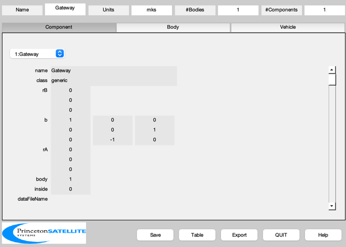
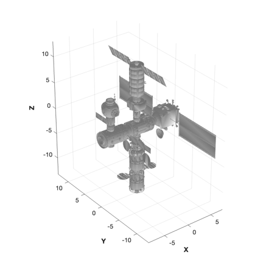

Lunar Gateway CAD model from OBJ file
Loads the GatewaySmall_R.obj and creates a CAD model, saving it in Gateway.mat
See also: BuildCADModel, CreateBody, LoadCAD, AggregateComponents, SaveStructure
Contents
%-------------------------------------------------------------------------- % Copyright (c) 2022 Princeton Satellite Systems, Inc. % All Rights Reserved. %-------------------------------------------------------------------------- % Since version 2023.1 %--------------------------------------------------------------------------
Build the CAD model
BuildCADModel( 'initialize' ); BuildCADModel( 'set name' , 'Gateway' ); BuildCADModel( 'set units', 'mks' ); m = CreateBody( 'make', 'name', 'Core' ); BuildCADModel('add body', m ); BuildCADModel( 'compute paths' ); % Load the previously rotated/scaled OBJ file dCore = LoadCAD('GatewaySmall_R.obj'); [v,f] = AggregateComponents(dCore.component); b = [1 0 0;0 0 1;0 -1 0]; m = CreateComponent( 'make', 'generic', 'vertex', v, 'face', f,... 'faceColor', 'aluminum','rA', [0;0;0],'b',b,... 'mass', 40000, 'name', 'Gateway', 'body', 1, 'inside', 0 ); BuildCADModel( 'add component', m );
LoadCAD: Line 'l' Lines not implemented LoadCAD: Line 'l' Lines not implemented
Update the mass properties to produce the tables
g = BuildCADModel( 'get model'); BuildCADModel('show vehicle') SaveStructure(g,'Gateway'); %-------------------------------------- % $Id: af5afd9ff1f5df59d6a32ce4bff2b251a7307a75 $